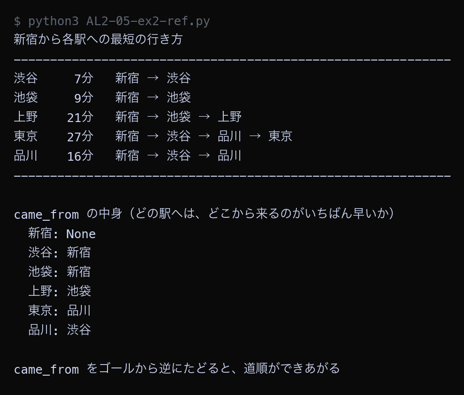

例題
例題1と例題2のコードを実行してください。まず作業フォルダを用意します。
VS Code でフォルダとファイルを用意する
Step 1: 作業フォルダを作る
- デスクトップに AL2 という名前のフォルダを作る（後期の授業ではずっと同じフォルダを使う）
- AL2 フォルダの中に No05 という名前のフォルダを作る
└── AL2/
├── No04/ ← 前回のファイル
└── No05/ ← 第5回はここに保存
Step 2: VS Code でフォルダを開く
- Visual Studio Code を起動する
- メニューから 「ファイル」→「フォルダーを開く」を選ぶ
- Step 1 で作った AL2/No05 フォルダを選んで開く
左側のエクスプローラーに No05 フォルダの中身が表示される（最初は空）。
Step 3: 例題ごとにファイルを作って実行する
- 左側エクスプローラーの No05 の横にある 新しいファイルアイコンをクリック
- ファイル名を入力して Enter（例題1なら
AL2-05-ex1.py） - 例題のコードブロック右上の コピーボタンをクリック
- VS Code の編集画面に 貼り付ける（Ctrl+V / Cmd+V）
- 保存する（Ctrl+S / Cmd+S）
- 右上の ▷（再生ボタン）をクリックして実行する
今回作るファイル（実践）: AL2-05-ex1.py, AL2-05-ex2.py。参考のコードを保存するときは、名前の最後に -ref を付ける
- 参考: コメントなしの完成したコード。まず読んで、全体の流れをつかむ
- 実践: アルゴリズムの要になる行が
____（穴）になっている。 丁寧なコメントと、コードの下の「ヒント」「候補」を見て、自分で埋めてから実行する
ファイル名は、参考が AL2-05-ex1-ref.py（ref = reference、参考）、
実践が AL2-05-ex1.py のように分けます（同じ名前にすると上書きされてしまうため）。
課題で使うのは実践のファイルです。
実行結果がページの画像と同じになれば正解です。ちがえば、どの穴がちがうかを考えて直します。
どうしても分からないときだけ、参考のコードと見比べてください。
今回のキーワード
| 用語 | 説明 |
|---|---|
| ダイクストラ法 | 重みが0以上のグラフで、出発点から各頂点までの最小コストを求めるアルゴリズム。 |
| 確定 | その頂点までの最小コストが「もう変わらない」と決まった状態。確定した頂点は二度と書き直さない。 |
| 緩和 | 「別の道を通ったほうが短い」と分かったときに、記録してある値を小さく書き直す操作。 |
| inf | Pythonで float("inf") と書く。どんな数より大きいので「まだ行き方が見つかっていない」印として使える。 |
| 負の重み | マイナスの重み。混ざるとダイクストラ法は正しく動かない。 |
距離表が決まっていく様子を見る
ダイクストラ法を、手順が目に見える形で書いたプログラムです。
1つの手順が終わるたびに、距離表の中身をそのまま表示します。
表の中で * が付いている駅は「もう変わらない」と決まった駅です。
例題1（参考）── 完成したコード。コメントなしで全体の流れをつかむ。保存するなら AL2-05-ex1-ref.py の名前で
Python ── AL2-05-ex1-ref.py railway = { "新宿": [("渋谷", 7), ("池袋", 9), ("品川", 30)], "渋谷": [("新宿", 7), ("品川", 9)], "池袋": [("新宿", 9), ("上野", 12)], "上野": [("池袋", 12), ("東京", 6)], "東京": [("上野", 6), ("品川", 11)], "品川": [("新宿", 30), ("渋谷", 9), ("東京", 11)], } start = "新宿" INF = float("inf") distance = {} for station in railway: distance[station] = INF distance[start] = 0 settled = set() def show_table(step, chosen): """今の距離表を1行で表示する""" parts = [] for station in railway: value = distance[station] text = "-" if value == INF else str(value) if station in settled: text = text + "*" parts.append(f"{station}:{text:>3}") print(f"手順{step} {chosen}を選ぶ " + " ".join(parts)) print("ダイクストラ法で、新宿から各駅までの最短時間を求める") print("（* が付いている駅は「もう変わらないと決まった駅」）") print("-" * 74) show_table(0, "なし") step = 0 while len(settled) < len(railway): step = step + 1 current = None for station in railway: if station in settled: continue if distance[station] == INF: continue if current is None or distance[station] < distance[current]: current = station if current is None: break settled.add(current) for name, minutes in railway[current]: if name in settled: continue new_distance = distance[current] + minutes if new_distance < distance[name]: old = "-" if distance[name] == INF else distance[name] distance[name] = new_distance print(f" {name} の時間を {old} から {new_distance} に書き直した" f"（{current} 経由: {distance[current]} + {minutes}）") show_table(step, current) print("-" * 74) print() print("新宿から各駅までの最短時間") for station in railway: print(f" {station}: {distance[station]}分")
▶ 実行結果
![AL2-05-ex1-ref.py の実行結果。ダイクストラ法で、新宿から各駅までの最短時間を求める / （* が付いている駅は「もう変わらないと決まった駅」） / -------------------------------------------------------------------------- / 手順0 なしを選ぶ 新宿: 0 渋谷: - 池袋: - 上野: - 東京: - 品川: - / 渋谷 の時間を - から 7 に書き直した（新宿 経由: 0 + 7） / 池袋 の時間を - から 9 に書き直した（新宿 経由: 0 + 9） / 品川 の時間を - から 30 に書き直した（新宿 経由: 0 + 30） / 手順1 新宿を選ぶ 新宿: 0* 渋谷: 7 池袋: 9 上野: - 東京: - 品川: 30 / 品川 の時間を 30 から 16 に書き直した（渋谷 経由: 7 + 9） / 手順2 渋谷を選ぶ 新宿: 0* 渋谷: 7* 池袋: 9 上野: - 東京: - 品川: 16 / 上野 の時間を - から 21 に書き直した（池袋 経由: 9 + 12） / 手順3 池袋を選ぶ 新宿: 0* 渋谷: 7* 池袋: 9* 上野: 21 東京: - 品川: 16 / 東京 の時間を - から 27 に書き直した（品川 経由: 16 + 11） / 手順4 品川を選ぶ 新宿: 0* 渋谷: 7* 池袋: 9* 上野: 21 東京: 27 品川:16* / 手順5 上野を選ぶ 新宿: 0* 渋谷: 7* 池袋: 9* 上野:21* 東京: 27 品川:16* / 手順6 東京を選ぶ 新宿: 0* 渋谷: 7* 池袋: 9* 上野:21* 東京:27* 品川:16* / -------------------------------------------------------------------------- / / 新宿から各駅までの最短時間 / 新宿: 0分 / 渋谷: 7分 / 池袋: 9分 / 上野: 21分 / 東京: 27分 / 品川: 16分](images/a05_ex1-ref_result.png)
手順1で新宿を確定させると、渋谷7分・池袋9分・品川30分が書き込まれます。手順2で渋谷を確定させたとき、品川の時間が30分から16分に書き直されています。直通の30分より、渋谷で乗りかえる16分のほうが早いことが見つかったためです。手順3以降、品川の16分はもう書き直されず、手順4で確定しています。最終的に、新宿から東京までは27分と求まりました。
例題1（実践）── 参考と同じ方法を別のデータで。要の行が ____ になっているので、コメントを読みながら埋めて、AL2-05-ex1.py の名前で保存して実行する
Python ── AL2-05-ex1.py # ダイクストラ法（1）: 距離表が1ステップずつ決まっていく様子を見る # 出発点から各駅までの「合計時間がいちばん短い行き方」を求める。 railway = { "横浜": [("川崎", 9), ("鶴見", 6), ("蒲田", 28)], "川崎": [("横浜", 9), ("蒲田", 11)], "鶴見": [("横浜", 6), ("目黒", 8)], "目黒": [("鶴見", 8), ("大森", 14)], "大森": [("目黒", 14), ("蒲田", 5)], "蒲田": [("横浜", 28), ("川崎", 11), ("大森", 5)], } start = "横浜" INF = float("inf") # inf は「まだ行き方が分かっていない」ことを表す無限大 # distance = 出発点からその駅までの、今わかっているいちばん短い時間 distance = {} for station in railway: distance[station] = INF distance[start] = 0 # settled = 「もう変わらないと決まった駅」を入れる集合 settled = set() def show_table(step, chosen): """今の距離表を1行で表示する""" parts = [] for station in railway: value = distance[station] text = "-" if value == INF else str(value) if station in settled: text = text + "*" parts.append(f"{station}:{text:>3}") print(f"手順{step} {chosen}を選ぶ " + " ".join(parts)) print("ダイクストラ法で、横浜から各駅までの最短時間を求める") print("（* が付いている駅は「もう変わらないと決まった駅」）") print("-" * 74) show_table(0, "なし") step = 0 while len(settled) < len(railway): step = step + 1 # 手順1: まだ決まっていない駅のうち、距離がいちばん小さい駅を選ぶ current = None for station in railway: if station in settled: continue if distance[station] == INF: continue if current is None or ____: # ← 穴1 current = station if current is None: break # どこにもたどり着けない駅が残っている場合 # 手順2: 選んだ駅を「決まった」ことにする settled.add(current) # 手順3: 選んだ駅のとなりの駅について、より短い行き方が見つかれば書き直す for name, minutes in railway[current]: if name in settled: continue new_distance = ____ # ← 穴2 if ____: # ← 穴3 old = "-" if distance[name] == INF else distance[name] distance[name] = new_distance print(f" {name} の時間を {old} から {new_distance} に書き直した" f"（{current} 経由: {distance[current]} + {minutes}）") show_table(step, current) print("-" * 74) print() print("横浜から各駅までの最短時間") for station in railway: print(f" {station}: {distance[station]}分")
穴埋め（____ を埋めてから実行する）
| 穴 | ヒント | 候補（1つが正解） |
|---|---|---|
| 穴1 | まだ確定していない駅の中で、いちばん時間が小さい駅を選ぶ | A. distance[station] > distance[current]B. distance[station] < distance[current]C. station < current |
| 穴2 | 確定した駅までの時間に、その路線の時間を足す | A. distance[current] + minutesB. minutesC. distance[name] + minutes |
| 穴3 | いまの表の値より短いときだけ書き直す | A. new_distance == distance[name]B. new_distance < distance[name]C. new_distance > distance[name] |
埋めたら保存して実行し、下の実行結果と同じになるか見比べる。ちがえば、どの穴がちがうかを考えて直す（上の「参考」のコードと見比べてもよい）。 答えは次回の授業の時刻に、ページのいちばん下の「解答例」に出ます。
▶ 実行結果
![AL2-05-ex1.py の実行結果。ダイクストラ法で、横浜から各駅までの最短時間を求める / （* が付いている駅は「もう変わらないと決まった駅」） / -------------------------------------------------------------------------- / 手順0 なしを選ぶ 横浜: 0 川崎: - 鶴見: - 目黒: - 大森: - 蒲田: - / 川崎 の時間を - から 9 に書き直した（横浜 経由: 0 + 9） / 鶴見 の時間を - から 6 に書き直した（横浜 経由: 0 + 6） / 蒲田 の時間を - から 28 に書き直した（横浜 経由: 0 + 28） / 手順1 横浜を選ぶ 横浜: 0* 川崎: 9 鶴見: 6 目黒: - 大森: - 蒲田: 28 / 目黒 の時間を - から 14 に書き直した（鶴見 経由: 6 + 8） / 手順2 鶴見を選ぶ 横浜: 0* 川崎: 9 鶴見: 6* 目黒: 14 大森: - 蒲田: 28 / 蒲田 の時間を 28 から 20 に書き直した（川崎 経由: 9 + 11） / 手順3 川崎を選ぶ 横浜: 0* 川崎: 9* 鶴見: 6* 目黒: 14 大森: - 蒲田: 20 / 大森 の時間を - から 28 に書き直した（目黒 経由: 14 + 14） / 手順4 目黒を選ぶ 横浜: 0* 川崎: 9* 鶴見: 6* 目黒:14* 大森: 28 蒲田: 20 / 大森 の時間を 28 から 25 に書き直した（蒲田 経由: 20 + 5） / 手順5 蒲田を選ぶ 横浜: 0* 川崎: 9* 鶴見: 6* 目黒:14* 大森: 25 蒲田:20* / 手順6 大森を選ぶ 横浜: 0* 川崎: 9* 鶴見: 6* 目黒:14* 大森:25* 蒲田:20* / -------------------------------------------------------------------------- / / 横浜から各駅までの最短時間 / 横浜: 0分 / 川崎: 9分 / 鶴見: 6分 / 目黒: 14分 / 大森: 25分 / 蒲田: 20分](images/a05_ex1_result.png)
埋めて実行した結果が、この画像と同じになれば正解です。ちがうときは、どの穴がちがうかを考えて直してください。
どの道を通ったかを記録する
ダイクストラ法は最短時間を求めますが、そのままでは「どの道を通ったか」が分かりません。 距離を書き直すときに、どの駅から来たかも一緒に記録しておけば、あとで道順を組み立てられます。
例題2（参考）── 完成したコード。コメントなしで全体の流れをつかむ。保存するなら AL2-05-ex2-ref.py の名前で
Python ── AL2-05-ex2-ref.py railway = { "新宿": [("渋谷", 7), ("池袋", 9), ("品川", 30)], "渋谷": [("新宿", 7), ("品川", 9)], "池袋": [("新宿", 9), ("上野", 12)], "上野": [("池袋", 12), ("東京", 6)], "東京": [("上野", 6), ("品川", 11)], "品川": [("新宿", 30), ("渋谷", 9), ("東京", 11)], } start = "新宿" INF = float("inf") distance = {} came_from = {} for station in railway: distance[station] = INF came_from[station] = None distance[start] = 0 settled = set() while len(settled) < len(railway): current = None for station in railway: if station in settled: continue if distance[station] == INF: continue if current is None or distance[station] < distance[current]: current = station if current is None: break settled.add(current) for name, minutes in railway[current]: if name in settled: continue new_distance = distance[current] + minutes if new_distance < distance[name]: distance[name] = new_distance came_from[name] = current def build_route(goal): """ゴールからスタートへ逆にたどって道順を組み立てる""" route = [] node = goal while node is not None: route.append(node) node = came_from[node] route.reverse() return route print("新宿から各駅への最短の行き方") print("-" * 60) for station in railway: if station == start: continue route = build_route(station) print(f"{station:<4} {distance[station]:>3}分 " + " → ".join(route)) print("-" * 60) print() print("came_from の中身（どの駅へは、どこから来るのがいちばん早いか）") for station in railway: print(f" {station}: {came_from[station]}") print() print("came_from をゴールから逆にたどると、道順ができあがる")
▶ 実行結果

各駅への最短の行き方が、駅名を矢印でつないだ形で表示されました。東京へは「新宿 → 渋谷 → 品川 → 東京」で27分が最短です。came_from の中身を見ると、東京には「品川」、品川には「渋谷」、渋谷には「新宿」と書かれています。東京から逆にたどると 東京 → 品川 → 渋谷 → 新宿 となり、順番をひっくり返せば道順になります。第1回の幅優先探索で経路を復元したときと、まったく同じやり方です。
例題2（実践）── 参考と同じ方法を別のデータで。要の行が ____ になっているので、コメントを読みながら埋めて、AL2-05-ex2.py の名前で保存して実行する
Python ── AL2-05-ex2.py # ダイクストラ法（2）: 最短時間だけでなく「どの道を通ったか」も記録する # 距離を書き直したときに「どこから来たか」も一緒に記録しておけば、あとで道順を復元できる。 railway = { "横浜": [("川崎", 9), ("鶴見", 6), ("蒲田", 28)], "川崎": [("横浜", 9), ("蒲田", 11)], "鶴見": [("横浜", 6), ("目黒", 8)], "目黒": [("鶴見", 8), ("大森", 14)], "大森": [("目黒", 14), ("蒲田", 5)], "蒲田": [("横浜", 28), ("川崎", 11), ("大森", 5)], } start = "横浜" INF = float("inf") distance = {} came_from = {} for station in railway: distance[station] = INF came_from[station] = None distance[start] = 0 settled = set() while len(settled) < len(railway): current = None for station in railway: if station in settled: continue if distance[station] == INF: continue if current is None or ____: # ← 穴1 current = station if current is None: break settled.add(current) for name, minutes in railway[current]: if name in settled: continue new_distance = ____ # ← 穴2 if ____: # ← 穴3 distance[name] = new_distance came_from[name] = current # 「どこから来たか」を記録する def build_route(goal): """ゴールからスタートへ逆にたどって道順を組み立てる""" route = [] node = goal while node is not None: route.append(node) node = came_from[node] route.reverse() return route print("横浜から各駅への最短の行き方") print("-" * 60) for station in railway: if station == start: continue route = build_route(station) print(f"{station:<4} {distance[station]:>3}分 " + " → ".join(route)) print("-" * 60) print() # 「どこから来たか」の記録そのものを表示する print("came_from の中身（どの駅へは、どこから来るのがいちばん早いか）") for station in railway: print(f" {station}: {came_from[station]}") print() print("came_from をゴールから逆にたどると、道順ができあがる")
穴埋め（____ を埋めてから実行する）
| 穴 | ヒント | 候補（1つが正解） |
|---|---|---|
| 穴1 | まだ確定していない駅の中で、いちばん時間が小さい駅を選ぶ | A. distance[station] > distance[current]B. station < currentC. distance[station] < distance[current] |
| 穴2 | 確定した駅までの時間に、その路線の時間を足す | A. distance[current] + minutesB. distance[name] + minutesC. minutes |
| 穴3 | いまの表の値より短いときだけ書き直す | A. new_distance > distance[name]B. new_distance < distance[name]C. new_distance == distance[name] |
埋めたら保存して実行し、下の実行結果と同じになるか見比べる。ちがえば、どの穴がちがうかを考えて直す（上の「参考」のコードと見比べてもよい）。 答えは次回の授業の時刻に、ページのいちばん下の「解答例」に出ます。
▶ 実行結果

埋めて実行した結果が、この画像と同じになれば正解です。ちがうときは、どの穴がちがうかを考えて直してください。